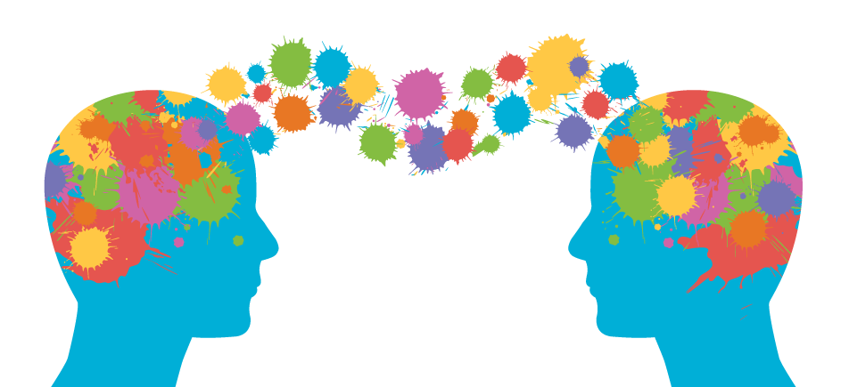

Mentoring
I spend a lot of my time mentoring kids in elementary schools through a club called OASES. I believe that through helping kids, I can make an impact on someone who needs help in school. I think it is rewarding to see how much of an influence one person can be to a group of students and motivate them to find a bright future.

Marketing
One of the future careers that I'm currently interested in is marketing. I think that it will be a great way for me to use my creative side and influence how consumers see products and affect if they want to buy the product or not.

Photography
People say that a picture is worth a thousand words. Even though that's completely cliche, I think that's true. Photography gives the user the ability to share a story or a moment that you will never want to forget. I love taking pictures of my friends so that I will never forget the memories we have all made together.